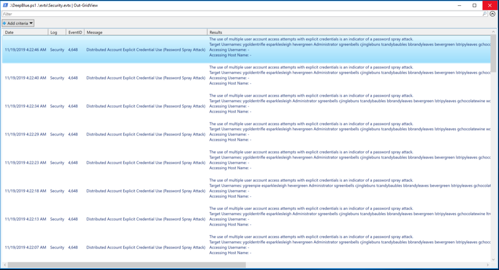
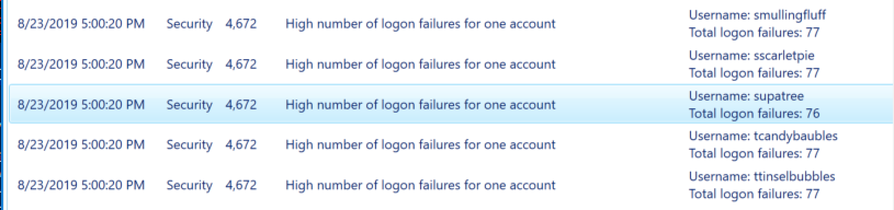
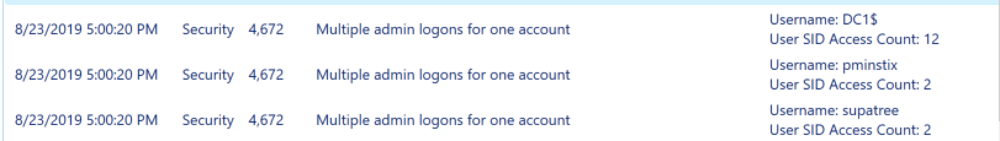
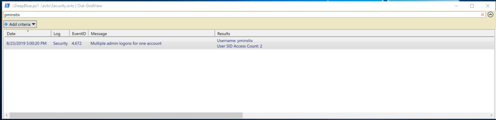
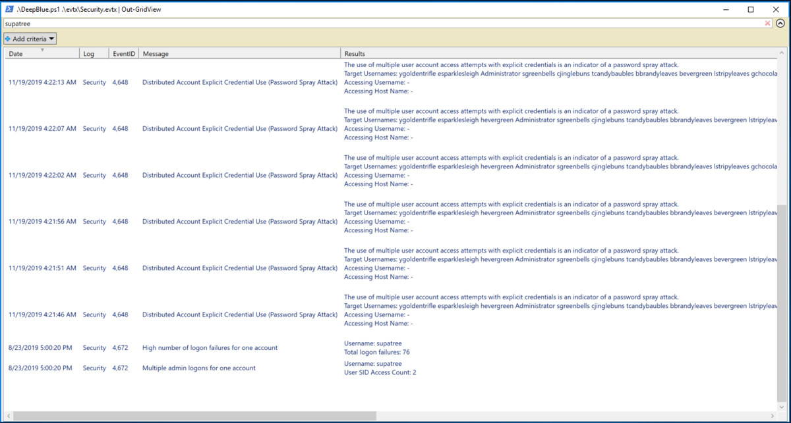

3. Windows Log Analysis: Evaluate Attack Outcome¶
Difficulty: 🎄
Evaluate Attack Outcome
We're seeing attacks against the Elf U domain!
Using the event log data, identify the user account that the attacker compromised using a password spray attack.
Bushy Evergreen is hanging out in the train station and may be able to help you out.
⚡️ Solution¶
After completing Escape Ed Challenge and talk to Bushy Evergreen, He will give you a two hints which will help you with this objective.
Deep Blue CLI on Github
Deep Blue CLI Posting
Password spraying attack example
You can check the password spraying attack example by running processing the password-spray.evtx file in DeepBlueCLI:
.\DeepBlue.ps1 .\evtx\password-spray.evtx
Given the hints, We will DeepBlueCLI tool to analysis the logs file. Download and extract the DeepBlueCLI tool .
Open Powershell and run DeepBlueCLI to process the Security.evtx file using :
.\DeepBlue.ps1 .\evtx\Security.evtx | Out-GridView
Out-GridView option used to get DeepBlueCLI output as GridView type.
Running scripts is disabled on this system Error
See the Set-ExecutionPolicy Readme if you receive a running scripts is disabled on this system error.
After processing the file the DeepBlueCLI output will contains all password spay attacks:

You will notice the following:
-
The list of the accounts targeted by the attack:
Targeted Usernames: ygoldentrifle esparklesleigh hevergreen Administrator sgreenbells cjinglebuns tcandybaubles bbrandyleaves bevergreen lstripyleaves gchocolatewine wopenslae ltrufflefig supatree mstripysleigh pbrandyberry civysparkles sscarletpie ftwinklestockings cstripyfluff gcandyfluff smullingfluff hcandysnaps mbrandybells twinterfig civypears ygreenpie ftinseltoes smary ttinselbubbles dsparkleleaves
-
All each account attacked 77 times with explicit credentials except one account supatree was attacked 76 times:

-
If we sort the events by date , We will get 3 interesting events with admin logons:

-
Only this account supatree is included in the attacker targeted accounts:


So the user account that the attacker compromised is supatree account.
The answer:
supatree
Congratulations! You have completed the Windows Log Analysis: Evaluate Attack Outcome challenge! 🎉
🎓 What you've learned¶
- Threat Hunting via Windows Event Logs.
- DeepBlueCLI Tool.